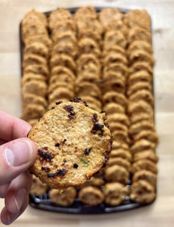

Nashville Hot Chicken Nuggets
Recipe Created By: Josh Cortis

Description
Nashville Hot Chicken Nuggets is a macro-friendly, freezable chicken
nuggets made from ground chicken breasts and sweet potatoes with
jalapeno and spices to give them some heat.
Prep Time
30 Minutes
Cook Time
1 Hour
Nutrition Info
Per Serving - Makes 90
32kcal | 2.2g C | 3.6g P | 1g F
Ingredients
- 3 lbs (1362 g) ground chicken
- 3 medium (720 g) sweet potatoes
- 5 stalks (50 g) green onion
- 1 (30 g) jalapeño pepper
- 3 (210 g) eggs
- 0.5 cup (60 g) flour
- 1 tbsp (15 g) minced garlic
- 3 tbsp (45 g) hot sauce
- 2 tsp (12 g) salt
- 1.5 tbsp (9 g) paprika
- 1 tbsp (6 g) chili powder
- 1 tbsp (6 g) cayenne pepper
- 1 tbsp (6 g) onion powder
- 1.5 tbsp (18 g) brown sugar
- 2 tbsp (30 g) oil
- oil spray
Instructions
For The Nuggets
- Preheat your oven to 400°F
- Wash all of your vegetables. Peel and cut your potatoes into smaller chunks, cut the stem from the jalapeño, and cut the ends off of the green onions and chop into smaller pieces.
- Using a food processor, blender, or grater, process your sweet potatoes and jalapeño down into a mince. The food processor works the best here but i've also used a blender with success. You want the potato to be in “riced” form. I do this before I grind up the chicken in the food processor because it feels cleaner.
- After the potatoes and jalapeños have been minced, I add in the green onions and process them down a bit as well. I don't like to do this earlier because I prefer to have some larger pieces of the green onions. If they are added at the same time as the potatoes they get chopped down too small.
- In a large bowl, add your minced vegetables, ground chicken, 2 tbsp of oil, 3 tbsp of hot sauce, 1 tbsp of minced garlic, ½ flour, 3 beaten eggs, as well as all of your spices and brown sugar. Mix thoroughly to combine and evenly distribute the ingredients.
- Spray a couple of large sheet pans with oil.
- Place your meat mixture onto the sheet pan using a cookie scoop, ensuring you have plenty of space between each nugget. Wet your fingers to prevent sticking and lightly press the balls into a disc with your fingers. You don't want to go too thin or else they will be prone to sticking.
- You want your nuggets to be about 2 inches in diameter and ¼-½ inch in thickness. I made 90 total nuggets in this recipe. Depending on how big your cookie scoop is you may have a different yield.
- Bake for 8 minutes and then flip and bake an additional 4 minutes.
- Cool the nuggets on a wire rimmed baking sheet and repeat this process until all of your meat mixture has been used up. Doubling up on sheet pans in the oven will help you go faster but can lead to less optimal browning. I honestly don't care about this because I reheat in the air fryer and can get plenty of browning this way so I put one sheet pan on each rack of my oven.
Storing
- Once the nuggets have cooled, arrange them onto a sheet pan and place them into the freezer, uncovered until they have frozen solid. This will help them not stick together in the bags.
- Once they are frozen solid, transfer them to a zip top bag, remove all of the air and keep them in your freezer. As long as you protect them from air and freezer burn, they will last for months.
Reheating
- I reheat using the air fryer at 400°F for about 5 minutes. They just need to thaw and get hot. You can also use the microwave or oven.